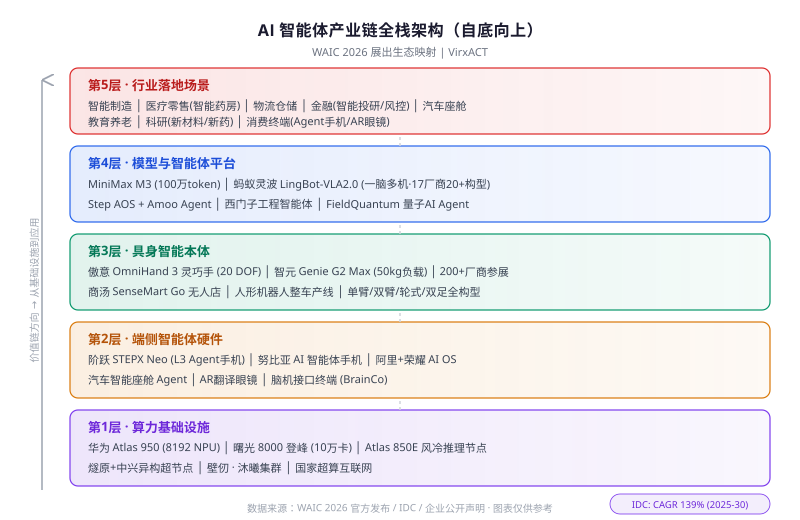

2026 智能体应用元年：一份WAIC 2026中智能体软硬件生态与落地场景的产业地图
序言：十万平方米里的"智能体时刻"
7 月 17 日，第九届世界人工智能大会（WAIC 2026）在上海"三地四馆"开幕——这一届的数字格外值得划线：1,100+ 企业、3,000+ 展品、300+ 全球首发、10 万平方米展区面积（史上首次突破六位数）。同期，29 国在上海签约成立世界人工智能合作组织（WAICO），总部设在上海，旨在推动 AI 领域国际合作与治理。
对产业参与者而言，更值得关注的是另一层叙事：2026 年被业界定调为"智能体应用元年"。IDC 预测，2025–2030 年全球 AI Agent 市场将以 139% 的年复合增长率扩张。在这一共识下，WAIC 2026 以"智能体 / 世界模型 / 具身智能 / AI 算力基建"四大板块为主线，呈现了一幅从芯片到应用端的全栈产业地图。
本文将沿着这条产业链自底向上展开，逐层解读。

▲ 图：AI 智能体产业链五层架构——从算力基建到行业落地，WAIC 2026 展出生态映射
第一层：算力底座——超节点竞赛全面爆发
华为 Atlas 950 SuperPod：8,192 卡超级节点
WAIC 2026 的"镇馆之宝"之一，是华为的 Atlas 950 超级计算节点。它的核心参数包括：
- 最小配置 64 张昇腾 NPU / 柜
- 可扩展至 8,192 张 NPU，作为单一逻辑集群运行
- 液冷散热系统，面向万亿参数模型训推
- 已适配制造、金融、医疗等 11 大行业
- SuperCluster 规模报道超 50 万卡
此外，华为还展出了面向 Agent 推理场景的 Atlas 850E 风冷超节点，采用升级 VCE 散热技术，专为低延迟 Agentic 推理设计——从训练大模型到推理智能体，华为的节点体系正在分层覆盖。
展台工作人员表示"需求远超供给"，反映出各行业对国产高端算力的旺盛需求。
曙光 8000「登峰」：10 万卡全国产超级集群
中科曙光推出的 Sugon 8000"登峰"集群采用"超智融合"路线——即不按传统方式将科学计算、大模型训练、AI 推理和工业仿真划分到不同集群，而是原生融合。该系统已接入国家超算互联网，面向高校、企业和个人用户提供算力服务。
更多玩家：燧原、壁仞、沐曦
- 燧原科技 + 中兴：发布异构超节点架构，允许不同类型 AI 芯片在同一集群中协作，降低适配成本。燧原于 7 月 7 日过会科创板 IPO，算是大会前的"献礼"
- 壁仞、沐曦：也各自发布新超节点集群，国产芯片在超节点层面形成"华为 / 曙光 / 燧原 / 壁仞 / 沐曦"五路并进的格局
超节点之争的底层逻辑是：通过高带宽互联和集群规模扩展，在系统层面实现更强的整体算力。这是国产 AI 算力基建走向规模化的核心路径。
第二层：端侧智能体硬件——Agent 手机与智能座舱
阶跃星辰 STEPX Neo：全球首款 L3 级 AI 智能体手机
上海独角兽阶跃星辰（StepFun）在 WAIC 首发了 STEPX Neo —— 全球首款通过中国 L3 级 AI 终端智能认证的手机。L3 认证要求设备能够：
- 自主理解用户复杂意图
- 将任务拆解为子步骤
- 跨应用协调执行动作
技术上，STEPX Neo 搭载了阶跃自研的 Step AOS（Agent 操作系统）和 Amoo 智能体，支持离线运行。官方演示的典型场景是：用户说一句"帮我规划一趟京都旅行"，Agent 会自动搜航班、推荐住宿、完成预订、整理行程，全程无需手动切换 App。
此外，阶跃还发布了面向汽车智能座舱的升级版超级 Agent——将 Agent 从手机延伸到车机，是 StepFun "Agent OS everywhere" 策略的一环。
相关阅读：从系统级 Agent 到 Step AOS：AI 原生操作系统的演进路线
中兴努比亚：另一条 Agent 手机路线
努比亚以"全球首款 AI 智能体手机"的名义参展 WAIC 2026，搭载字节豆包手机助手。与 StepFun 自研全栈（模型 + OS + 硬件）不同，努比亚走的是"终端品牌 + 外部大模型"的组合路线。
Agent 手机赛道在 WAIC 上正式分化为两条路径：一方全栈自研，一方生态整合。
阿里 + 荣耀：AI 设备操作系统联盟
除了手机厂商单兵突破，阿里巴巴与荣耀宣布深化合作，联手打造面向 AI 设备的操作系统层。这意味着 Agent 能力不只是一个 App，而要下沉到 OS 层，与系统调度、传感器、跨 App 数据流深度打通。
第三层：具身智能——200 家人形厂同台竞技
WAIC 2026 在 H3 馆设置了机器人专区，约 200 台机器人同场展出，覆盖双足人形、轮式协作、灵巧手等多种形态。大会组委会还搭建了一条人形机器人整车产线工作坊，5 大工序（电池模组装配 → 螺钉紧固 → 电力接驳 → 内饰音响 → 灯组测试）全部由具身智能机器人实时完成。
傲意 AGILINK OmniHand 3 Ultra-M
- 仿人手尺寸，20 自由度
- 五指指尖均集成视觉 + 触觉传感器
- 掌心分布式三维触觉感知
- 现场展示双手折气球狗——全球唯一公开演示
智元机器人 + 京东物流 Genie G2 Max
重载具身智能机器人，核心参数：
- 单臂 18kg / 双臂 38kg / 峰值 50kg 负载
- 亚毫米级精度操作
- 自主充电与换电，7×24 无间断运行
- 已获安全认证
商汤 SenseMart Go 无人店
将人形机器人直接投入零售场景：拣货、上架、盘点、异常处理。访客可扫码体验完整购物闭环——机器人在你面前取货、递到手上。
强脑科技 BrainCo：脑控机器人训练平台
全球首个一体化、图形化脑机接口机器人开发平台。无 BCI 背景的开发者 10 分钟即可让机器人执行脑控操作——将脑机接口从实验室拉向应用开发。
第四层：模型与智能体平台
MiniMax M3：百万 token 原生多模态
MiniMax 发布 M3 旗舰多模态模型，核心亮点：
- 上下文窗口 100 万 token
- 自研 MSA（MiniMax Sparse Attention）架构
- 在长文本处理、Coding、Agentic 任务上显著提升
百万级上下文为 Agent 执行复杂多步任务提供了"工作记忆"层面的保障——Agent 能在一次会话中读完整本合同、整个代码仓库、或持续数小时的对话历史。
蚂蚁灵波 Full-Stack Brain 2.0：一脑多机
蚂蚁集团旗下蚂蚁灵波展出 LingBot-VLA2.0——跨本体具身大模型，核心特点：
- 预训练使用 6 万小时高质量真实世界数据
- 已适配 17 家厂商、20+ 种构型（乐聚、智元、宇树、银河通用等），涵盖单臂、双臂、双足、轮式
- 支持头部、腰部、末端执行器、移动底盘的全身自由度控制
其落地场景——与国大药房合作的智能药房（接单 → 智能分拣 → 递送），入选十大"镇馆之宝"。"一脑多机"模式意味着换一个机器人本体不必重新采数据/训练，直接适配，大幅降低具身智能规模化部署的成本。
西门子工程智能体
跨国企业中最引人注目的 Agent 发布。西门子首次展示其工程智能体——能够自主规划并执行工业自动化工程任务。西门子中国 CEO 肖松表示，AI 在中国的落地优势在于"场景驱动"：丰富的工业场景 × 完整的制造体系 × 快速的创新节奏。
相关阅读：企业 AI Agent 部署的 7 个陷阱与实战指南
其他值得关注的发布
- FrameX AI Genesis：交互式视频模型，用户可"走进"视频与 AI 角色实时对话
- FieldQuantum：量子 AI 智能体平台，面向半导体材料研发和创新药发现（百度风投、HSG 等天使轮）
第五层：落地场景全景
将上述硬软件能力投射到具体行业，WAIC 2026 呈现的落地图谱如下：
- 智能制造：人形机器人整车产线（5 工序实时演示）、西门子工业自动化 Agent
- 医疗零售：蚂蚁灵波智能药房、SenseMart Go 无人店
- 物流仓储：智元 + 京东 Genie G2 Max 重载协作
- 消费终端：Agent 手机（阶跃 STEPX Neo / 努比亚）、汽车智能座舱
- 金融：WAIC 金融下午茶专场"智能体价值涌现"（智能投研、风控 Agent）
- 教育 / 养老：AI 作为"智能伙伴"的定位，AR 翻译眼镜（100+ 语种）
- 科研：FieldQuantum 量子 AI Agent 赋能新材料 / 新药研发
- 脑机接口 + 机器人：BrainCo 平台让脑控机器人从论文走向 SDK
相关阅读：从 LLM 到 Agent 的范式转换：聊天已死，执行为王
十大"镇馆之宝"速览
WAIC 每年由组委会评选"镇馆之宝"（最多 10 项），标准为技术含量 × 市场前景 × 可复制性 × 社会价值。2026 年入选的代表项目包括：
- 华为 Atlas 950 SuperPod
- 曙光 8000「登峰」全国产超级集群
- 阶跃星辰 STEPX Neo（L3 智能体手机）
- MiniMax M3 百万 token 多模态
- 蚂蚁灵波智能药房（跨本体具身大模型）
- 傲意 OmniHand 3 灵巧手
- 智元 Genie G2 Max 重载具身机器人
（其余项目因信息分散暂未完全确认）
产业信号与投资启示
从 WAIC 2026 的展出结构中，可以提炼出几条清晰的产业信号：
- 从"参数竞赛"到"落地竞赛"：大会主题从往年强调模型能力，转向强调"实际服务人的能力"
- 超节点是当下国产算力的核心叙事：以高带宽互联与规模化集群为抓手；华为/曙光/燧原/壁仞/沐曦五路并进
- Agent 的入口之争：手机 OS 层（阶跃 Step AOS vs 阿里+荣耀 vs 努比亚+豆包）、汽车座舱、机器人本体——谁掌握了 Agent 的入口，谁就拿到了下一代流量分配权
- "一脑多机"是具身智能规模化的关键：蚂蚁灵波适配 17 厂商/20+ 构型的模式，比"一机一脑"路线更具经济性
- 政策强背书：十五五规划开局之年 + 国家层面高度重视 + 29 国签约 WAICO + 政府工作报告点名"智能经济"
对投资者而言，关注方向可以沿"算力基建 → Agent OS/入口 → 具身智能本体 → 垂直行业 Agent SaaS"的链条展开。
相关阅读：Agent 治理与可观测性的隐藏成本
小结
WAIC 2026 传递的最强信号不是某一项技术突破，而是整条产业链的同时就绪：算力超节点批量上线、Agent OS 竞争白热化、具身智能走出实验室进入产线和药房、百万 token 上下文让 Agent 拥有足够的"工作记忆"。
当基础设施、操作系统、模型能力、场景需求四层同时 ready 时，所谓"应用元年"便不再只是口号——它是产业链共振的结果。
免责声明：本文基于公开报道和企业官方声明整理，不构成投资建议。文中提及的产品参数以企业官方发布为准，实际性能可能因版本迭代而变化。
参考来源
- 300 plus AI products set to make their global debuts at WAIC - Global Times
- Event serves as innovation platform - China Daily
- China Tech Giants Push Computing Limits as WAIC 2026 Opens - City News Service
- Ant Brain Full-Stack 2.0 Makes Its Debut at WAIC - AI Base
- Shanghai enters 'AI moment' with 2026 World AI Conference - SCIO
- Huawei's new computing cluster, world's first AI agent phone - SCMP
- World AI Conference to address global hardware and robotics bottlenecks - Bamboo Works
- StepFun Unveils StepX Neo as World's First Agentic Smartphone - Gadgets360
- WAIC 2026 Signals Top-Level Endorsement for China's AI Ambitions - City News Service
- Emergence of Agent Value! WAIC Finance Afternoon Tea - Futunn
- Ahead of WAIC 2026, Yanshan AI Releases Four Predictions - PR Newswire
延伸阅读
- MCP vs A2A：AI Agent 通信协议深度对比
- 多智能体协作框架实战指南
- 开源大模型选型 2026：从参数到性价比
- Langfuse：LLM/Agent 可观测性入门指南
- 物理 AI 与世界模型：人形机器人的大脑进化
- 人形机器人 2026：中美投资版图对比
推荐搭配装备
善其事，利其器。以下硬件能最大化你的AI体验👇
🔗 通过以上链接购买可支持本站持续运营 🙏